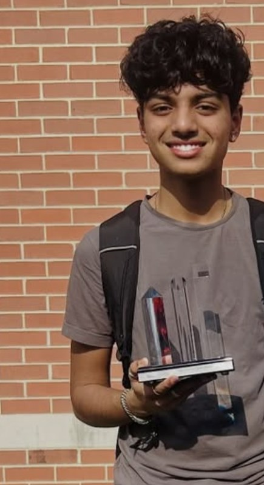

Rising All-Star Award
FIRST Robotics, 2026. Our team also placed 8th at our first FIRST Mid-Atlantic event.
Mechatronics · Robotics · Code
I build things that move: robots, prosthetic hands, and the code that brings them to life.

01 / About
I'm a junior in the Academy of Computer and Information Sciences at Morris County School of Technology. I've learned Python, C++, Java, HTML, and CSS, but what I love most is when code makes something physical move. That's what pulled me into Arduino, my school's robotics team, and eventually mechatronics engineering.
I learned a lot from mentors: upperclassmen on my robotics team and my welding teacher. Now I try to do the same for others, whether that's teaching new robotics members or helping kids at summer camp get their first Arduino project working.
02 / Awards
FIRST Robotics, 2026. Our team also placed 8th at our first FIRST Mid-Atlantic event.
TSA NJ State Conference, 2026. NYC urban heat island analysis in Python.
TSA NJ State Conference, 2025, my first year in TSA.
Self-studied AP Computer Science Principles outside of school (2026).
Fallout (60 hrs, prosthetic hands) and Capitol (36 hrs, LunchLoop).
Submitted FireWatch, a wildfire-monitoring app, in 2026.
Computer Programming I & II through Fairleigh Dickinson University.
As Student Council Secretary, through homecoming and pep rallies.
03 / Projects
Wyatt is our FRC robot, driven with a PS5 controller. It uses a swerve drive with four swerve modules, each powered by a NEO motor and a NEO 550, plus a shooter that launches dodgeball-like game pieces. The FIRST Mid-Atlantic game was basically basketball for robots: score in the hoops and defend against other teams. I helped my team earn the Rising All-Star Award, and we placed 8th at our first competition.

A wildfire-monitoring web app. Raspberry Pi devices combine camera images (processed with OpenCV) and a thermal sensor to flag possible fires and report them to a FastAPI server. The site maps those events alongside NASA FIRMS satellite data and plans driving, biking, or walking routes that avoid fire zones. Anyone can set up their own camera, and flagged events are confirmed by the camera's owner, since automatic detection can make mistakes.
For my second hand, I switched to NEMA 17 stepper motors for more force and control and designed the parts in Onshape. I spent over 60 hours planning and testing it through Hack Club's Fallout program.
A cardboard hand with an Arduino that moves the fingers using a joystick. The joystick is wired to a breadboard linked to two mini servos, and each servo pulls strings that act like muscle fibers to move two or three fingers. It started as a way to explore what Arduino could do while building something I found really interesting!
#include <Servo.h> // imports the servo library so the Arduino can move servos
Servo servo1;
Servo servo2;
// creates two servo objects
void setup() {
Serial.begin(9600); // starts the serial monitor for debugging
servo1.attach(7);
servo2.attach(8);
// connects each servo to its own pin
pinMode(6, INPUT_PULLUP); // sets pin 6 as the joystick's button input
}
void loop() {
int joystickValueX = analogRead(A0);
int joystickValueY = analogRead(A1);
// reads horizontal and vertical joystick movement
int pushPin = digitalRead(6); // reads whether the button is pressed
int servoAngle = map(joystickValueX, 0, 1023, 0, 180);
int servoAngle2 = map(joystickValueY, 0, 1023, 0, 180);
servo1.write(servoAngle);
servo2.write(servoAngle2);
// converts joystick position (0-1023) into a servo angle (0-180)
if (pushPin == LOW) { // button pressed: close the hand fully
servo1.write(180);
servo2.write(180);
delay(1000);
}
}For TSA's Geospatial Technology event, my team studied why parts of New York City get so much hotter than their surroundings. I wrote Python code that reads geospatial heat data and turns it into colorful maps. We combined public datasets on surface temperature, air-conditioning access, and heat vulnerability, and proposed cooling solutions. We placed 4th in New Jersey. The graph below shows NYC before and after our proposed solution.
import rasterio
import matplotlib.pyplot as plt
import numpy as np
# libraries for geospatial raster data, graphs, and number crunching
heatmap_raster_path = "f_deviation_smooth.tif"
with rasterio.open(heatmap_raster_path) as src:
heat_map = src.read(1) # reads the first band of the heat map
if src.nodata is not None: # checks for missing data
heat_map = np.ma.masked_equal(heat_map, src.nodata)
else:
heat_map = np.ma.masked_less(heat_map, -100)
plt.figure(figsize=(9, 8)) # sets the size
plt.imshow(heat_map, cmap='turbo') # sets the color map
plt.title("NYC Urban Heat Map (Mean Surface Temperature 2020–2022)")
plt.colorbar(label="Deviation from the Mean")
plt.tight_layout()
plt.grid()
plt.show() # adds a legend, spacing, a grid, and displays it
Built with a team I met at a hackathon: a web app that helps school cafeterias predict how much food to prepare. It forecasts demand from past meals and attendance, adds a safety buffer so no one goes without a meal, and lets students vote on upcoming menus. In our simulated school, it found over $1,000 in savings and a way to cut food waste by about 47%.
Working with our neighboring Academy of Biotechnology, my team designed a system inspired by nature to collect coral gametes during the rare coral spawning event. I led the CAD. After three months, we had a 3D-printed collector that could gather agar-like gamete replicas, with a side box for a camera to monitor flow and a collection box at the top.
04 / Leadership
2026–present · Mechanical Leader 2025–26
Lead the team and teach new members the engineering design process. FRC and FTC.
2026–present
Gather classmates' input and push for changes to school services.
2025–26
Helped raise $1,000+ through homecoming and pep rallies; attended leadership conferences.
Summer 2025
Taught kids robotics, Arduino, and Onshape at the MCST STEM Summer Camp and the Essex County 4-H camp.
Fall 2024
Designed and produced positive-affirmation cards for a teen mental health organization (23 hours).
2026–27
Helping tell our school's story this year.
05 / Timeline
Started high school. Joined robotics and TSA, and volunteered with Mind4Youth.
4th place in Technology Bowl at the TSA NJ State Conference.
STEM camp counselor. Built my first prosthetic hand.
Became robotics Mechanical Leader and Student Council Secretary. Started the TSA heat island project.
Built Wyatt's swerve drive. Built prosthetic hand v2 with stepper motors.
Rising All-Star Award. 4th place in Geospatial Technology at TSA States. Earned a 5 on self-studied AP CSP.
Robotics President. Built FireWatch and LunchLoop. Competing in TSA Data Analytics, Automated Manufacturing Prototype, and Manufacturing Prototype.
06 / Contact
Want to talk robotics, code, or a project idea? Reach out.